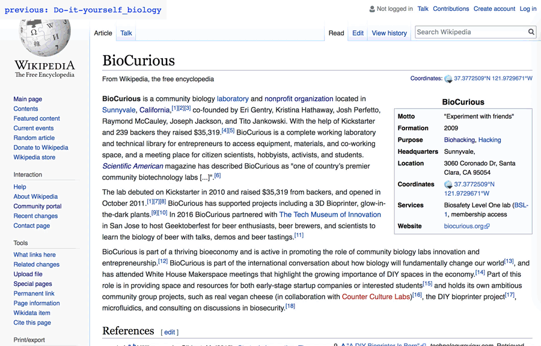

Autosurfers

Autosurfer #1
Autosurfer #1 starts with a random Wikipedia article and then chooses a random link within the article to "click" next. It will continue the process forever gently taking the user through a convoluted path of random information.
 Autosurfer #2
Autosurfer #2
Autosurfer #2 creates random Google Image search queries and simplifies the view to just the images and the query text.
 Autosurfer #3
Autosurfer #3 pulls up a Google satellite map for a random Latitude and Longitude. Currently, this app is using coordinates found in the Global Database for Airports, so as to avoid points in the middle of the ocean where satellite imagery may be missing.
Autosurfer #3
Autosurfer #3 pulls up a Google satellite map for a random Latitude and Longitude. Currently, this app is using coordinates found in the Global Database for Airports, so as to avoid points in the middle of the ocean where satellite imagery may be missing.